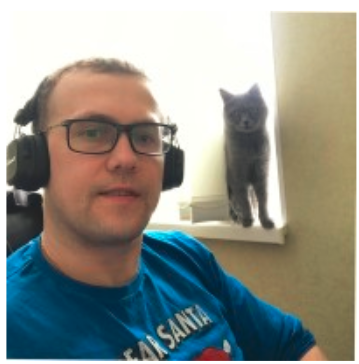
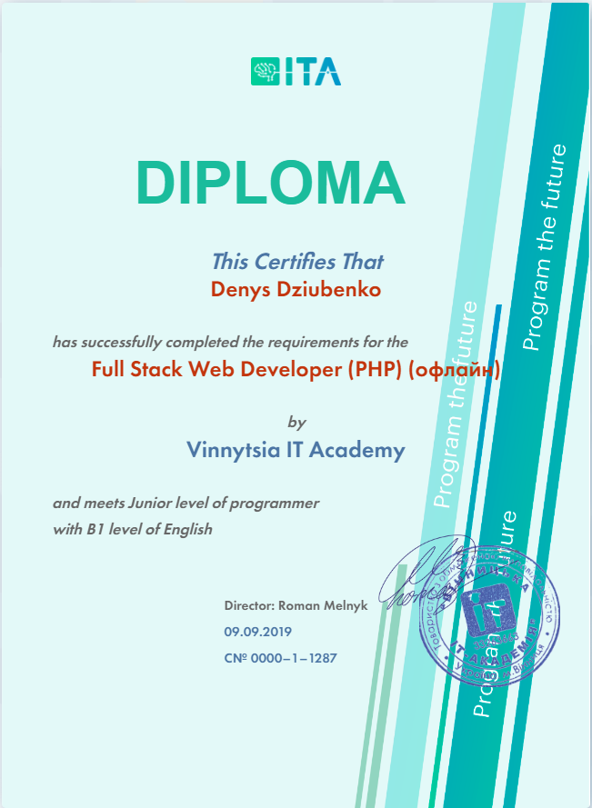

Денис Дзюбенко
D. Dziubenko
КОНТАКТИ
Vinnytsia Region, Ukraine
937-99-992
СОЦІАЛЬНІ МЕРЕЖІ
ОСВІТА / РОБОТА
Освіта: V N T U Працює: RIA.com Форма навчання: Вечірня Тренер: Vinnytsia IT Akademy
Публічна оферта
Профіль заповнено на 72%
Привіт. Про програмування, як вид діяльності, почав задумуватись ще в далекому 2012 році. Вже тоді самостійно починав вивчати по книжках та на веб ресурсах спочатку С++, трохи згодом PHP. Але довести свої старання до необхідного рівня і як результат працевлаштуватися - мені не вдалось. Коли самонавчався, відвідав кілька інтерв'ю, де мені дали зрозуміти, що, крім, самих знань по програмуванню, англійська мова є також не менш важливою. Трохи ще позаймавшись, я, врешті решт просто перегорів так як не бачив результату своїх старань. Було 4 інтерв'ю, які не принесли бажаної роботи) До рішення знову спробувати стати програмістом я йшов 5 років. Працював в галузях не пов'язаних з програмуванням. Рішення піти вчитись прийшло швидко, так як для себе я зрозумів що потрібна система, систематичність та правильний вектор, які для себе я визначити не міг, бо досвіду “0” і підсказати не було кому. Про Вінницьку IT-Академію чув вже доволі давно, правда, нічого конкретного в плані рекомендацій. Але провчившись в даному закладі ОДНОЗНАЧНО РЕКОМЕНДУЮ його, і зараз на власному прикладі розповім чому. Одразу хочу попередити, що все розказане мною буде виключно мій особистий досвід перебування в ній та свої відчуття.
ІТ-Академія забезпечує чудовими викладачами-практиками, які охоче діляться своїм досвідом. Вони відкриті до спілкування і готові допомогти дуже часто і в позанавчальні години. Комфортні аудиторії та завжди привітний менеджерський склад ІТ-Академії. Сам процес навчання в мене проходив досить рівно, заняття корисні та цікаві. Дуже класні викладачі англійської, які зроблять все необхідне щоб ВАЙТИ_В_АЙТІ. Реальне розуміння процесів, які проходять в програмуванні почало приходити під час роботи на проектах, де є можливість відчути себе розробником і, де є робота в команді. Для себе зрозумів що програмування - це така ж навичка як і, наприклад, робота тим же продавцем чи зварювальником. До того веду, що це все можна навчитись і ці навички здобути реально. Працювати доведеться багато і старанно, причому на протязі всього навчання, звичайно, якщо ви бажаєте досягнути результату. Дуже часто доводилось засиджуватись допізна в пошуку рішення над задачами. І вони не завжди приходили швидко і легко.
Це постійний процес самовдосконалення себе як спеціаліста і постійний пошук кращих рішень написання коду, так як сфера ІТ розвивається дуже стрімко і сьогоднішні рішення через незначний час можуть втратити свою актуальність. Тому потрібно бути готовим до змін і не варто прив'язуватись, наприклад, до якоїсь певної мови програмування. З власного досвіду скажу, що в ІТ-Академії вивчав профільно nodejs, але потрапивши на роботу (мені пощастило з роботою вже після року навчання) півроку програмував на мові elixir. Хто не чув - так, є така мова програмування)) І ще було трішки php. І знаєте що? Живий! І навіть іноді посміхаюсь) Звісно, це все жарти.
І по великому рахунку, не дуже принципово на чому писати (1С не рахується:)) - так як це все інструмент для реалізації поставленої задачі. Якщо кому цікаво чи всі довчились до кінця навчання, то відповім - ні. Десь приблизно 40-50% дійшло до кінця +/-, точно правда не рахував, але десь так. Також хочу додати, що пошук роботи слід починати самостійно - це дозволить підготуватись краще морально до цих всіх процесів і не чекати, що пропозиція з'явиться сама собою. Все починається з рішення, а прийнявши рішення - все стає прогнозованим. Такий підхід працює для мене. Якщо моя розповідь розвіє чийсь хоч один сумнів, то ту всю пєлєну слів писав не даремно. Зварювальники та продавці, до речі, світу теж потрібні. Всім успіхів в пошуку себе!
